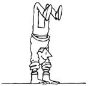

Mother's Down-Home Country Lore
Reader tips
January/February 1981
"I live up around Delta Junction in the Alaskan interior," writes reader Dave Fortune, "and I spend a lot of time out hunting, bush camping, and parading around the local glaciers with my dog team ... which means I'm frequently in need of a fast-and completely reliable-fire starter. (Believe me, when you've just finished hanging on a sled that's been racing along a windy river bottom in -20°F weather, you need an easy way to make a quick fire, if only to warm your hands enough to be able to bend your fingers again!) I've tried every flame starter 1 could find, but the handiest and most reliable burning aid I've found is simply paraffinsoaked paper!
"To prepare a batch of the firemakers, I first cut out two-inch-wide strips of newspaper. Next, I roll each 'ribbon' up tight and secure it with a piece of yarn. I then slowly melt a half-inch layer of wax in a three-pound coffee can, stand all the little paper rolls in the hot liquid, and remove the can from the heat. Presto! The paper soaks the wax up in no time.
"Whenever I need a fire on the trail, I simply tear loose a corner of one of the waxy cylinders, light that ragged end, and have an instant flame that'll last from 7 to 12 minutes. The paraffined rounds work so well that I always keep some in my sled bag and in all my jackets. My wife even carries a couple in her handbag . . . 'just' (as she says)'in case.' "
Darryl Wancour (from Center Line, Michigan) would like to "borrow" a little space here to remind folks that wooden clothespins will last a long time, and not freeze fast to your clothesline during cold spells, if you (just once, mind you) take the time to boil the garment grabbers in a strong solution of salt water.
Whenever Faye Gottschall sews a garment for her three-year-old daughter, the Friendsville, Pennsylvania seamstress attaches a small tag of contrasting material-marked with the size of the piece of clothing-inside the rear of the garment. That way, anyone who later receives any of the homemade wearables as hand-me-downs will know whether the clothing will be "fit" for its intended purpose. And, because Faye's youngster has learned that "the flag is in the back", that child never has any trouble dressing herself.
Mrs. Wilfred J. Hynous-a resident of Northlake, Illinois-likes to concoct her own inexpensive antiperspirant. She simply combines the contents of one large box of baking soda and one of corn starch (as a variation Mrs. Hynous will sometimes add a can of store-brand baby powder, and an additional small box of baking soda, to this basic mix), stores the preparation in a tightly sealed container . . . and then uses a dab of the powder whenever-and wherever-she feels the need for perspiration protection.
Galesville, Texan Kathy Smith sent us this tale about the first time she realized that some of the old ways are still the best ways:
"My infant daughter once had a very bad diaper rash. I tried every recommended cure for the ailment-from medicated creams and powders to baking soda, cornstarch, and even Aloe vera-but nothing healed the infection. Then a friend told me about her great aunt's rash remedy: burnt flour! Following the passed-down advice, I browned some white flour in a hot, dry frying pan ... and thereafter-at each diaper change-I rubbed a little of the (cool) scorched powder on my daughter's irritated parts.
"And you know what? In just 24 hours my youngster's rash was gone."
Most woodstove users know the "trick" of keeping a pot of water on their home heaters so the evaporating liquid can humidify "wooddried" air. Well, Pat Stoops of Alvordton, Ohio has added an extra touch to that sensible practice. Pat perks up the water in her stovetop moisturizer by putting spices and herbs in the liquid (one of the Buckeye Stater's favorite combinations is whole cloves, stick cinnamon, and citrus peels) to give her house a delightful aroma as well as humidified air!
"Here in Hartsel, Colorado," writes a reader who calls herself "Calamity Jane" Marvosh, "nighttime temperatures dip down to zero in November! So you can imagine that making sure there's water-and not ice-in our livestock's drinking containers is an everyday problem. But we cope with the situation by using, of all things, recycled auto tires.
"First off, we float several tires ( on their rims and inflated) in our largest water trough. Those black heat holders help insure that at least some part of that tub's surface remains unfrozen. (When the weather gets especially cold, we add more wheel units .. . and stack them two deep!)
"And we take care of our small livestock's water needs by using wheelless tires as doughnutshaped drink containers ... since any amount of sunlight at all will thaw the black 'water holes' by noon."
"Well, MOM," remarks John Beck of Bismarck, North Dakota, "I've discovered a simple and inexpensive way to even out the heat that comes from my workshop's woodburning stove. All I did was fill a 30-gallon barrel with water and place that metal 'jug' on top of my heater. While the stove is roaring during the day, the drum soaks up 30 gallons' worth of heat. Then, when the fire dies down to a few live coals at night, the water radiates its stash of BTU.
"The barrel is still warm to the touch next morning ... and the room temperature in my workshop is 10° to 15° warmer than it was before I devised this two-story heater!"
Putting a stone bedwarmer (which has been resting on a wood heater during the day) into bed with you at night has to be one of the oldest ideas in the hills ... but it's still a darn good one. So we're going to let John Thomas point out his variation of the classic winter warmer: It seems the Alledonia, Ohioan wraps a stoveheated brick in a small blanket or towel. John then packs that heat-holding building block at the foot of his bed to keep him toasty during his sleeping hours.
You may be surprised to know that snow can be used to clean upholstered furniture ... according to Leena Iso-Shola. Each winter, this Io wa City, Iowa correspondent takes her lounge chairs and sofas outside on a crisp, snow-on-the-ground day. She then lets her furniture get good and cold, brushes it all down with the fresh white "powder", and totes the clean and bright "sitters" back inside!
Worn-hrough old socks may seem like useless items ... but they can become helpful "wristlets" if-like Austin, Minnesota's John Carlin-you trim them to fit over your hand. John cuts both thumb and little-finger holes in opposite sides of salvaged footwear sections (some readers cut only thumb openings), slides the recycled garments over his hands, and has perfect "gap sealers" between his gloves and coat sleeves!
Olympia, Washington's Mickey Woore makes her own free scallion starters by recycling the cores of dry onion bulbs. Whenever the Northwest ruralite is carving up one of the vegetables for cooking, she carefully cuts all the onion slices she'll need off the plant's sides . . . leaving the core, root knob, and top shoot intact. Mickey then plants the saved inner section in a small garden pot and waters it. Before long the bulb bit sends up a fresh, tasty scallion. Not only that, but since the Evergreen State woman keeps cutting and using her new sprouts, each "mother bulb" sends up as many as six onion shoots!
Here's a trio of remedies for the common winter annoyance: cold feet.
[1] Tompkinsville, Kentucky's Carl Dams takes a pair of Styrofoam trays-the type that storebought meat is packaged in-and cuts the material to the outline shape of each foot. Then he inserts the insulating pads in his shoes or boots to keep his feet cozy!
[2] An alternative bit of foot-warming lore was mailed from Hague, North Dakota . . . where Dennis Mastel wraps his lower extremities in two layers of sweat socks that are separated by plastic bread bags.
[3] And this last suggestion-which, by the by, has come our way more than once-was sent to us by Kathy Glendon of Medicine Bow, Wyoming. Kathy sprinkles a bit of cayenne pepper inside her socks to help her feet win "the frostbite fight".
OK. Now it's YOUR turn! We've all come up with some practical, down-home, time-tested solutions to the frustrating little problems that bug us every day. Let's hear YOUR best "horse sense" ideas so we can share 'em and all benefit.
Send your pointers to Down-Home Country Lore, P.O. Box 10, Hendersonville, North Carolina 28791, and I'll make sure that the most useful of the suggestions will appear in upcoming editions. A one-year subscription-or a one-year extension of an existing subscription-will then be sent to each contributor whose tip does get printed in this column.-MOTHER.
 |
 |
|